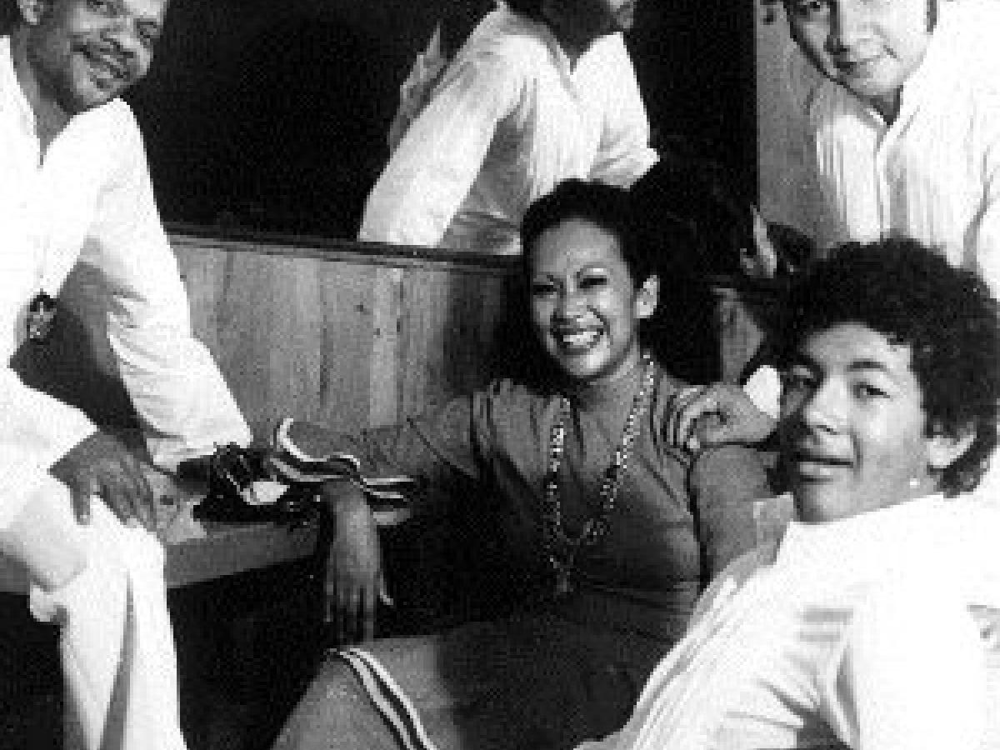
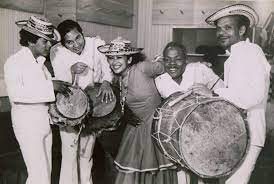
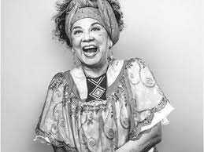

Totó La Momposina
Totó La Momposina es una cantante, bailarina y maestra, reconocida internacionalmente por la divulgación de la música folclórica del Caribe colombiano. Nació en Talaigua (Bolívar) en la región geográfica conocida como la depresión momposina , de ahí su nombre artístico. Creció en una familia de músicos, tanto su madre como su padre, fueron grandes impulsores de la música del Caribe, lo que los llevó a conformar un grupo de música con el cual Totó dio a conocer su talento al mundo. Desde la década de 1970 ha recorrido decenas de países interpretando cumbias, porros, mapalés y bullerengues. Hoy en día sigue dedicándose a la música y a la promoción de las tradiciones culturales del Caribe.
Formación musical y trayectoria internacional

Totó supo combinar y balancear la formación académica con la formación empírica y propia de la tradición oral. Estudió en el conservatorio de la Universidad Nacional de Colombia en Bogotá, sin embargo, sus intereses musicales requerían unos aprendizajes que no se encontraban en las universidades. Junto a Gloria Triana, emprendió un viaje por los pueblos ribereños del Magdalena para buscar a las cantadoras y los tamboreros, y aprender de ellas y ellos los ritmos y las canciones, pero también las formas de vida ligadas al río, las creencias y modos de relacionarse. Así, como lo expresa Totó (Señal Colombia, 2011), con su música y sus bailes, transmite también las tradiciones culturales de su región.

A partir de la década de 1970 Totó y su grupo musical empezó a realizar presentaciones en distintos países, como Estados Unidos, la República Democrática Alemana, Alemania Occidental, Francia, Polonia, Suecia, Yugoslavia y la Unión Soviética (Triana, 2008). Un hito en la carrera de Totó fue su participación en la delegación que acompañó a Gabriel García Márquez a recibir el premio Nobel de literatura en 1982. García Márquez había manifestado en una entrevista el deseo de recibir el premio en medio de cumbias y vallenatos. Ante esto, Colcultura organizó un grupo para que se presentara en el evento, en el cual Totó ocupaba un lugar importante. A pesar de los malos augurios de quienes consideraban bochornoso llevar una muestra folclórica a un evento tan protocolario, la presentación fue un éxito (Canal Encuentro, 2012).

Pasado el evento, Totó tomó la decisión de quedarse una temporada en París. Se matriculó en La Sorbonne para estudiar historia de la danza, coreografía, ritmo y organización de espectáculos. Su estancia en París fue una catapulta para lograr el reconocimiento internacional y un lugar destacado como representante de la música folclórica caribeña. En 1984 fue invitada por primera vez al Womad (World of Music Art and Dance), un festival itinerante que reúne en espectáculos, realizados simultáneamente en distintos países, a los principales exponentes de la música folclórica. A través del Womad, Totó se vinculó a la fundación Peter Gabriel lo que le permitió consolidar su proyecto musical. En 1987 regresó a Colombia y luego aprovechó una estancia de su hijo y colega Marco Vinicio para investigar nuevos ritmos y aprender sobre el bolero.